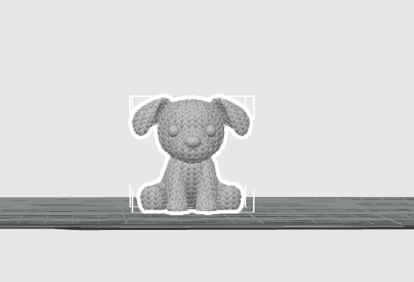
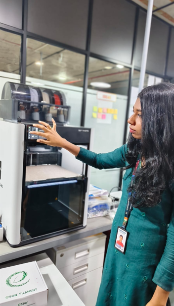
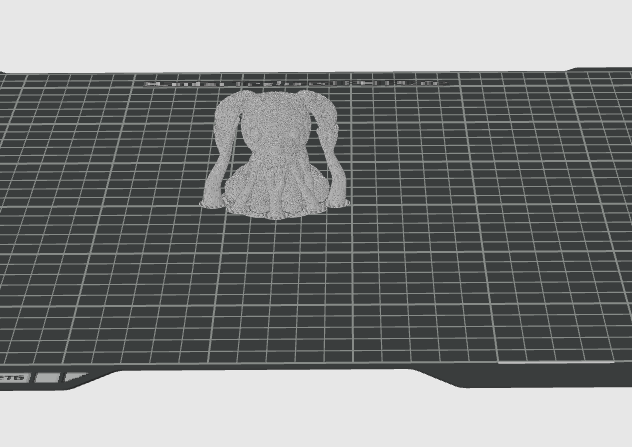

3D Printing
Exploring additive manufacturing workflow from CAD models to finished objects.
1. Printer Details
The 3D-printing activity was carried out using a laboratory 3D printer, with Bambu Studio used for model preparation and slicing.
| Specification | Actual Detail |
|---|---|
| Make | Bambu Lab Confirm |
| Model | Confirm Actual Model |
| Build Volume | Confirm Volume |
| Nozzle Size | Confirm Nozzle Size |
| Supported Materials | Confirm Compatibility |
2. Slicer & Material
The selected 3D model was prepared and sliced using Bambu Studio. The original reference image was converted into a 3D model using Bambu MakerLab and then imported into Bambu Studio.
| Parameter | Actual Value |
|---|---|
| Slicer / Software | Bambu Studio 02.08.02.61 |
| Process Profile | 0.20 mm Standard @BBL H2S |
| Material Used | Bambu PLA Basic |
| Colour | White |
| Filament Diameter | 1.75 mm |
| Material Density | 1.26 g/cm³ |
3. Printer Limits & Capabilities
Capabilities
The Bambu Lab H2S successfully produced the detailed features of the skull-shaped cup, including the teeth and eye sockets. It also handled the overhanging areas around the jaw and cranium using tree supports.
Limitations
The main limitations observed were the visible layer lines on curved surfaces due to the 0.4 mm nozzle and 0.20 mm layer height. Some overhanging areas required supports, which left small marks after removal. Very fine details smaller than the nozzle width were also difficult to reproduce accurately.
The image-to-3D conversion produced a relatively large mesh of approximately 500,000 triangles, making the model more demanding to process in the slicer.
4. Why the Object Cannot Be Made Subtractively
Complex Geometry
The selected skull-shaped cup contains an internal cavity, eye-socket undercuts, an overhanging jaw and detailed teeth.
These features are difficult to manufacture using conventional subtractive methods because cutting tools require physical access to the surfaces being machined. Producing the complete shape could require multiple machining operations or splitting the object into several parts.
The Additive Advantage
3D printing is more suitable because the skull cup can be produced layer by layer, allowing complex cavities, undercuts and curved features to be created directly from the digital model seamlessly.
5. STL Definition
Standard Tessellation Language
STL (Stereolithography) is a file format commonly used to represent the surface geometry of a 3D object.
An STL file represents the surface using a triangular mesh. The surface of the model is divided into many connected triangles. Together, these triangles approximate the shape of the object, including its curved and detailed surfaces.
Why use STL?
STL is commonly used for 3D printing because it provides a simple representation of the model's geometry that slicing software can easily process and convert into printable layers.
6. Selected STL File
Here is the final STL representation of the selected 3D model, showing the triangular mesh generated for printing.

7. Slicer Settings
Bambu Studio Final Profile
Configured for Bambu Lab H2S with 0.4 mm nozzle and PLA Basic.
| Parameter | Final Slicer Setting |
|---|---|
| Nozzle temperature | 220 °C |
| Bed temperature | 55 °C |
| Layer height | 0.20 mm |
| Infill percentage | 15% |
| Infill pattern | Grid |
| Wall/shell count | 2 walls |
| Print speed |
Feature-dependent: 200 mm/s outer wall 300 mm/s inner wall 350 mm/s sparse infill |
| Supports | Enabled — Tree (Auto) |
| Support threshold angle | 30° |
| Adhesion type | Brim — Outer Only |
| Brim width | 5 mm |
| Nozzle diameter | 0.40 mm |
| Filament | PLA Basic |
| Build plate | Textured PEI Plate |

10. Final Result
The 3D-printing process successfully transformed the digital parameters into physical reality. Below are the finalized prints.
